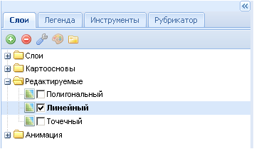

Папка Редактируемые
Редактируемые слои носят технический характер и служат для обмена данными или информацией между различными пользователями. Папка содержит три типа редактируемых слоев: полигональный, линейный и точечный, которые загружаются автоматически при запуске приложения. Выбор типа слоя зависит от того, какие объекты пользователь собирается создавать (редактировать).
Для отображения в рабочем окне нужного редактируемого слоя его надо отметить галочкой слева от названия. Чтобы получить возможность редактировать слой его необходимо сделать активным, нажав курсором на названии слоя. При этом шрифт поменяется на жирный. Редактирование объектов осуществляется с помощью кнопки управления  Панель редактирования на панели главного меню.
Панель редактирования на панели главного меню.
